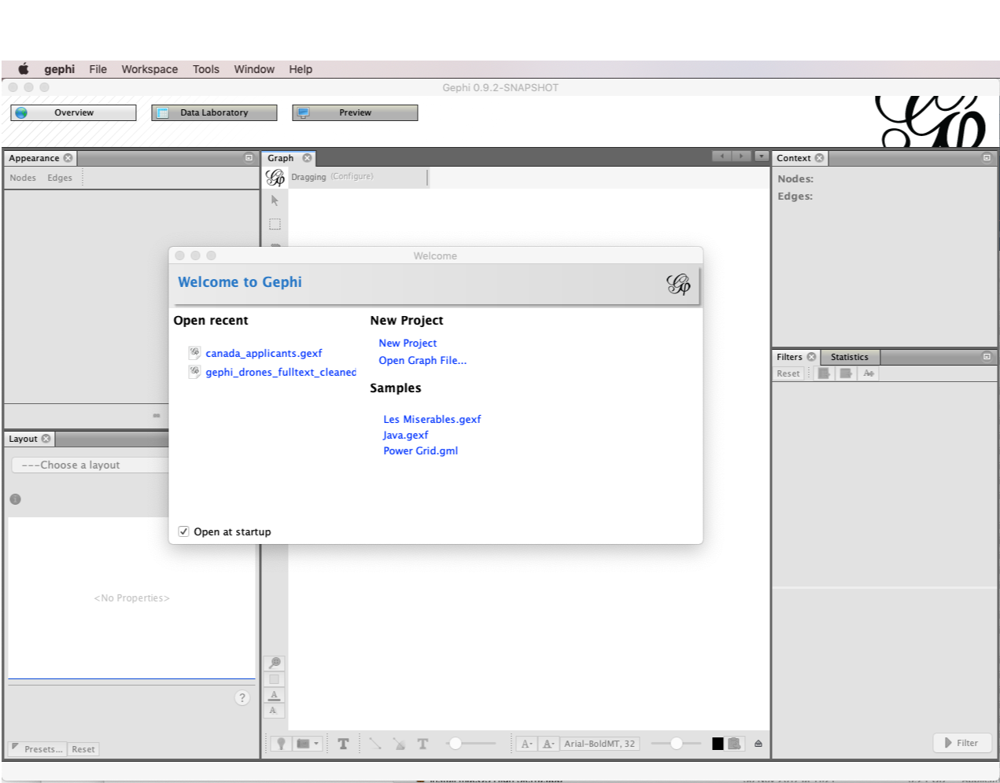
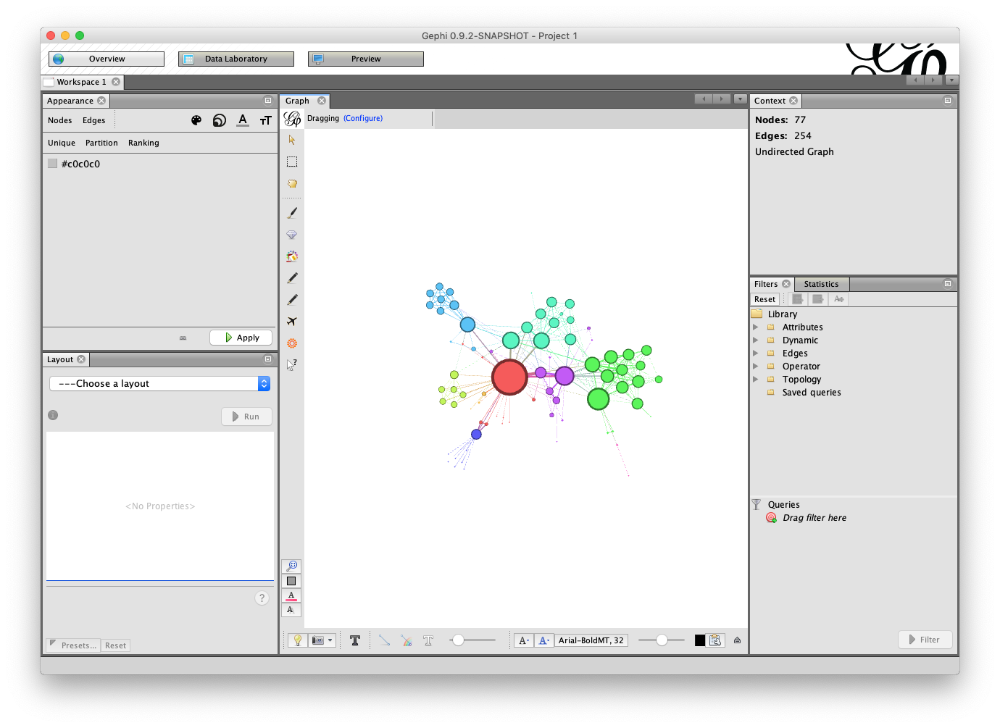
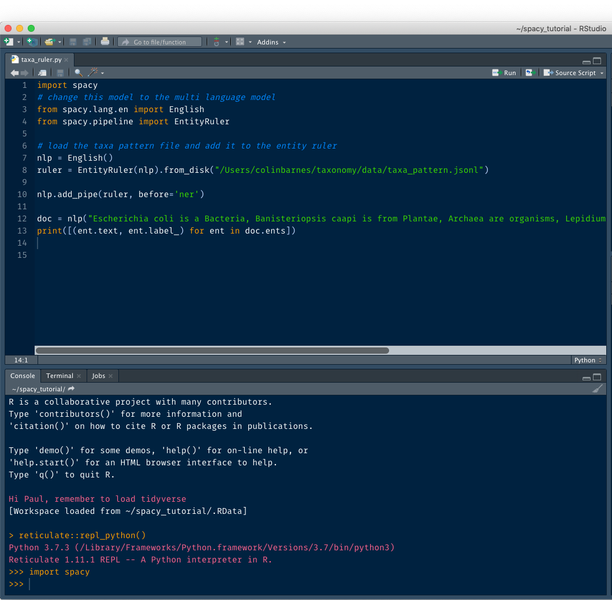

Kenlit will be a main focus for the NACOSTI Kenya Science Week Workshop on Data Science. Yould will need to install free software on your machine to follow the practical sessions. Please follow the instructions below.
The workshop will provide an introduction to data science for those who are new to the subject and welcomes people of all abilities. We also aim to cater for more experienced data scientist who are already working in R or Python.
Please follow the instructions below carefully. Additional instructions for more experienced participants are marked as optional.
The Lens Database. Create a free account at the Lens https://www.lens.org/ 1a. Optionally ask for a free token from the Lens for the session on accessing data with an API but it is not formally needed for the workshop. This will be of interest to participants who have worked with APIs before.
Tableau Public. Sign up for a Tableau Public account https://public.tableau.com/en-us/s/ and download the Tableau Public software. You may optionally want to download the trial desktop version (requires a monthly subscription) but you can switch to the free Public version at the end of the trial.
We will use the free Open Refine to illustrate data cleaning tasks
Download the latest release of Open Refine from here http://openrefine.org/download.html
Open refine is a programme that runs in Chrome. So if you cannot open it set your browser to Chrome.
Optionally, R users may want to try out Chris Muir’s refinr package https://github.com/ChrisMuir/refinr. A range of options for using Open Refine in Python seem to be available. However, it is unclear how many of these are actually working.
Gephi is an open source Java based programme. Download the version for your OS from here https://gephi.org/.
When you open Gephi you should see this:

Click on Les Miserables.gexf and then OK and you should see this network:

If you do not see this then you will probably need to either fix the path to your Java installation or reinstall from scratch. To fix this kind of problem follow this thread [https://github.com/gephi/gephi/issues/1787]
To work with the data you will need to do the following
In the console run the following to install packages that we will be using. This can take a while so do it in advance.
install.packages("tidyverse") # a set of packages including dplyr, tidyr, stringr
install.packages("tidytext") # for text mining
install.packages("spacyr") # use python spaCy text mining in R
install.packages("reticulate") # run Python in RStudio
install.packages("widyr") # helper package to assist with creating network visualisations
install.packages("igraph")
install.packages("ggraph")
install.packages("cowplot")
install.packages("usethis")
# install from github
devtools::install_github("poldham/kenlitr")
devtools::install_github("poldham/places")If you are interested in working with Python:
From the terminal and on the path to your python installation run the following
Start up your Python session and then run
You should be good to go.
This is optional for those with some experiene with R who are interested in running Python inside RStudio.
If you are an RStudio user and want to work in Python inside RStudio you may want to specify the version of Python to use. For example Mac OSX comes with Python 2.7 installed and it will default to that as the first version of Python it finds. To change this specify the path to the version of Python you want to use in the R console (not a code chunk). Adapt for your system.
library(reticulate)
use_python("/Library/Frameworks/Python.framework/Versions/3.7/bin/python3", required = T)An alternative approach is to use the usethis::
then add the following using your path to python:
Now restart R for the change to take effect.
Note that there are good reasons not to do this. It is generally preferable to run Python in environments using Anaconda to avoid dependency clashes etc. However, for the purposes of the workshop this will be good enough.
Next, go to FILE > NEW FILE > PYTHON SCRIPT
Then use Python as normal. For more experienced users note that you can run python in R markdown code chunks by creating a code chunk with {python} as you would for an R code chunk. However, the execution of each code chunk closes the Python session… so it is often easier to work with a Python script to keep the Python shell available for experimentation.
An example of this working in practice is below.

Note that the console is now showing that it is running Python with >>> rather than > for R.
Save python scripts as normal.